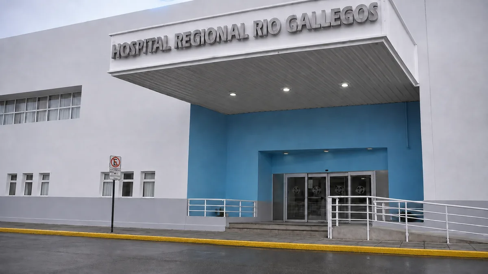

Dirección Académica
La Dirección Académica de Docencia e Investigación coordina la formación continua, las residencias, las rotaciones y la actividad científica del Hospital Regional Río Gallegos, en articulación con el Comité de Docencia e Investigación (CODEI).

Misión
Fortalecer la formación continua, la docencia y la investigación en salud del Hospital Regional Río Gallegos, garantizando procesos académicos accesibles, transparentes y de calidad para el equipo de salud y la comunidad académica de Santa Cruz.
Funciones y objetivos
- Coordinar capacitaciones, ateneos y formación continua del equipo de salud.
- Gestionar las residencias médicas y las rotaciones de estudiantes e instituciones externas.
- Impulsar y acompañar proyectos de investigación en salud.
- Articular con el CODEI la política académica y científica del hospital.
Equipo
Conocé a las personas que integran la Dirección Académica.
Institucional
¿Tenés una consulta institucional?
docenciahrrg@gmail.com